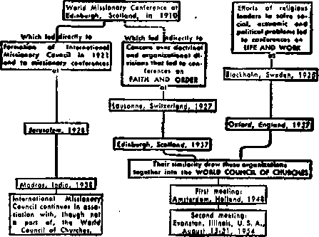

CAN IMAGES ELEVATE CHRISTIAN WORSHIP?
Many people think so. What are the facts?
How the trend to divide is being reversed
A warning on how you drive your car
She has a special reason for fear!
JULY 22, 1954 semimonthly
New* lourccs that are able to keep you awake to the vital iuue* of our time* must be unfettered by censorship and selfish interests. “Awake I" has no fetters. It recognize* facts, faces facts, is free to publish facts. It is not bound by political ambitions or obligations; it is unhampered by advertisers who** toes must not be trocden on; it is unprejudiced by traditional creeds. This journal keeps itself free that it may speak freely to you. But it doe* not abuse its freedom. It maintains integrity to tnith.
w Awake I” use* the regular news channels, but Is not dependent on them. Its own correspondents are on all continents, in scores of nations. From the four comers of the earth their uncensored, on-the* scenes reports come to you through these columns. This journal*s viewpoint i* not narrow, but 1* international. It is read In many nations, in many languages, by persons of all ages. Through Its pages many fields of knowledge pass in review—government, commerce, religion, history, geography, science, social conditions, natural wonders—why, its cover* age is as broad as the earth and as high as the heavens.
“Awake J” pledges itself to righteous principles, io exposing hidden foes and subtle dangers, to championing freedom for all, to comforting, mourners and strengthening those disheartened by the failures of a delinquent world, reflecting sure hope for the establishment of a right* cous New World.
Get acquainted with “Awake I” Keep awake by reading “Awake!”
PUBLISHED SCMIMOSTHLT BT WATCHTOWER BIBLE AND TRACT SOCIETY, INC.
117 Adama Street Brooklyn 1, N, Y., IL S. A.
N. H. Kkorb, PrMident Grant Suiter, fictretar*
Printing this issue: 1,250,000
Five cents a copy
flanitUnm should be peat to afflea In ymir Mun try in compliance with rotulatioos La futrintr* sift delivery of money. Remittances are accepted ai Brooklyn from countries where so office is locale it by International money order only. Subscription rates In' different countries are here stated Io local currency. Notice of miration (with renewal blank) Ji sent at least two issues before subscription empires. Chang* of addrei* when seat to our office n&y bi expected effective within one month, Send your old as well si new adtan.
Ari <rf torcb 3, J $7$. Print ri io U. 8. A.
UnHHtt In wjiitfi thk inyuta h publUhad: SoiarmthlF’—Afrikami, Etifllih, Fiu&bh, Frtnch, German, Holltndish,, Ncmrtgi*nh Spanish, Swedish, Monthly—Ointsti, Greek, PoHugune, likralniin.
Office* Yearly subscription Mate
Anjarha, u s(. ]J 7 Adams St.. Brooklyn 1, N.Y. *1 Airtrllh. U Beresford Rd, StrtthHeld, N-S.W.
Canada, 40 Irwin Ata., Toronto f», Ontario *1 Englant, 34 craren Terrace, Lbndwi, W. 2 7a South Africa, Print* P.O. Etandsfoateta, TranBTta! 7s
Entered as jecoTirf-cIa'is matter at Brnofcfrn, 5', 1'
CONTENTS
Britain's Reaction to the Hydrogen Bomb 3 i
Can Images Elevate Christian Worship? 5
Religious Unity in the Twentieth Century 9
The Vampire—There Is a Villain!
Fanning the Flames of Intolerance 17
Do Tinted Windshields Impair or
Mauritius, an Isolated Miniature World 24 “Your Word Is Truth”
Jehovah’s Witnesses Preach
Volume XXXV"
Brooklyn, N. Y., July 22, 1954
Number 14
By “Awaktl” correspondent in Britain
FEAR has gripped the world. The recent hydrogen-bomb tests in the Pacific have added new terror to the already greatly strained and fear-stricken civilization. Tension and apprehension mount in the Far East. Trepidation and anticipation are running high in Russia and America. Even the once confident and Gibraltar-like Great Britain is quaking out of fear.
The gravity of the situation was heavily underlined by events in Parliament when Mr. C. R. Attlee, the leader of the Opposition, tabled a motion that "this House, recognising that the hydrogen bomb with its immense range and power as disclosed by recent experiments constitutes a grave threat to civilisation and that any recourse to war may lead to its use, would welcome an immediate initiative by Her Majesty’s Government to bring about a meeting between the Prime Minister and the heads of the Administrations of the United States of America and the Union of Soviet Socialist Republics for the purpose of considering anew the problem of the reduction and control of armaments and of devising positive policies and means for removing from all the peoples of the world the fear which now oppresses them and for the strengthening of collective peace through the United Nations Organisation.”
Attlee went on to say that his party believes "that civilisation today is in grave
danger”; that “we have reached a culminating point in the development of warfare”; that “those who contend that the possession of the hydrogen bomb can be an instrument for preserving peace” are laboring under a “profound delusion.” “The minds of people all over the world are disturbed at this hydrogen bomb explosion,” said Attlee. “I think that it is a world-wide fear and that it will grow, and I believe that it should be encouraged to grow. I want every man and woman in the world to be acutely aware of the danger in which they stand.”
What, then, does the future hold, according to Mr. Attlee? His reply is that “the forces of destruction will keep piling up. We cannot stop these things. It may be that the knowledge of how to make these weapons may get more and more extended. Incidents leading to war continue; the burden of armaments presses on the nations and causes impatience. The only way open to us seems to be to make a new approach to world problems with the consciousness of this great danger.”
To Attlee’s speech the prime minister, Sir Winston Churchill, remarked: “I do not feel that he [Attlee] has bridged the gulf between the awe-inspiring facts which he mentioned and the practical method of solving them by the Motion.” Attlee had)no new solution to offer to the nations, nor has any world leader for that matter. Their hearts melt within them and their knees quake for what they see coming upon the earth, because, as Jesus said: They know not the way out/—Luke 21:25, 26, New World Trans.
The grave concern of political leaders over the subject is reflected in two statements quoted from the Parliamentary Debates. One member, Mr. Strachey, said: "What has happened is that the peoples of the world have, for the first time, realised what it is to live in the world of the hydrogen bomb. . . , It is not the bomb itself which menaces our existence today. That is not what destroys us. It is men’s use of the bomb. After all, the bomb did not make itself. Human beings made it. ... now that we have done it, what matters is that the peoples of the world should realise what it means to live in a world where the power of almost ultimate destruction is for the first time in history in human hands/’ The leader of the Liberals declares: “Undoubtedly, the hydrogen bomb has accomplished one thing. It has brought home to people everywhere, not only in this country but in every country, the grave danger in which we all are. It is a threat not only to peace, but a threat to civilisation itself.”
Britons resent the idea that they are pledged to fight as allies of the United States while having no say in how and when the hydrogen bomb is to be used. They feel that the United States is treating Britain like a small brother, British com cem over American policy was the subject of a statement by Lord Hore-Belisha, quoted in the Sunday Pictorial, April 4, 1954, Before the House of Lords he called attention to the significance of United States Vice-President Nixon’s announcement that in the future the United States would rely primarily on its massive mobile retaliatory power, and urged that “Britain must be consulted in advance if the principle of unity of action with her powerful ally is to be maintained. Otherwise we would be handing over to the United States the unilateral responsibility for declaring a war into which we would irretrievably be drawn. This would be to sacrifice our sovereignty and our independence.” The British attitude to the use of the hydrogen homb was tersely phrased in the newspaper headline: “No 'Surrender* to Our Friends.”
However, an ominous fact that adds to British consternation is the fear that in the event of another war Britain would be the “cockpit** with the two major powers on each” side and Britain like a “sitting duck** in the middle. Were these weapons launched from British air bases Britain might well be the first to experience retaliation, The British Isles with their dense and compact population would be open to virtual annihilation.
But not only the British are concerned hut the whole world is, and they have cause to be. Professor Hans Thirring, head of the department of Theoretical Physics at the University of Vienna, said that it would be possible in time to construct a hydrogen bomb encased in cobalt layer, weighing 10,000 tons and capable of killing all organic life on earth.—Sunday Pictorial, April 4, 1954.
Those who study their Bibles and have come to know of the new world of righteousness at the door are confident that such destruction will not occur, for it is not left in the hands of men to do as they will. The ultimate destiny of all our earth is in the hands of the Almighty, and he assures us that he will “bring to ruin those ruining the earth/' (Revelation 11:18, Neu; World Trans.) Wise persons will now take heed to the significance of these eventful days and learn of God’s way and find the way to life.
CAN MAGES
ELEVATE
CHRISTIAN
WORSHIP?
AVAST number of professed
Christians use images to help them in their worship. Sometimes the images are large statues on pedestals. Quite often the images are small enough to be carried in the hand. Thus when the wife of Cuba’s president visited the United States, the Chicago Tribune noted that she arrived in Washington "clasping a statue in her hand ‘as a shield against evil.’ ” But the use of images goes far beyond the mere carrying of them for protection purposes. For many professed Christians bow down before images, pray to them, dress them in splendid robes, crown them, parade them with pomp through a city’s streets, kiss them, light candles to them, bum incense to them and even offer food to them. So whether one uses images in his worship or not the answers to the following four questions will be interesting and enlightening: (1) What is the origin of images in worship? (2) Did early Christians use images? (3) What do the inspired Bible writers have to say about images? (4) Does the effect of using images raise the quality of worship?
To find out the origin of images in worship we turn to page 373 of Cardinal Newman’s work An Essay on the Development
"A* long os you vonorafo thli Imago you ■hall not know want.” Claim* like thl* are being made for certain religious images. Can these images bring prosperity or protect one from harm? Here are facts regarding images that every truth-seeking person should know.
of Christian Doctrine, The cardinal explains that images, among other things, are "of pagan origin and sanctified by their adoption into the [Roman Catholic] Church.” According to another authority, more than just the pagan practice has been adopted by the church. The book, A Dictionary of Religious Knowledge, says, on page 455: “How slight is the difference between the image-worship of modem and of ancient Rome is indicated by the fact that in more than one instance what was formerly a heathen statue serves as a representation of some Roman Catholic saint, or Biblical patriarch, prophet, or apostle—and, in one famous case, of Jehovah himself!”
But in actual practice is there not a difference in the use of images between professed Christians and pagans? No, for even as ignorant pagans view images as being very real so likewise do Catholies of limited education. Du Bois, one of the early Roman Catholic missionaries in India, declared: “The common people indubitably worship the image itself.” Of the use of images in the eighth qentury after Christ, the Catholic Encyclopedia (Vol. VII, page 668) says: “The way in which some people treated their holy icons [images] argues more than the merely relative honour that Catholics are taught to observe toward them. . . . Icons were crowned with garlands, incensed, kissed.” The twentieth century is not different: In Central and South America and Mexico, Catholics of little education not only incense and kiss images but they offer food to them. This indicates
that the common people, whether pagan or professedly Christian, give images more than relative worship. Finally, even as the educated Catholic says that he is not worshiping the image itself but what is represented by the image, so likewise no intelligent pagan believes that the stone or metal that he bows down before is of itself a god.
It may surprise some, yet not in any genuine writings of the early age of Christianity can any trace be discovered of the use of images. In fact, says the Encyclopaedia, Britannica, Vol; XII, page 750 (1907 edition): “It was a common accusation brought against Christians by their enemies that they had ‘no altars, no temples, no known images’; and that ‘they set up no image or form of any god’, and this charge was never denied.” Enlightening us further, Dr. Augustus Neander, in his book The History of the Christian Religion and Church During the Three First Centuries, says: “The use of images was originally quite foreign to the Christian worship and churches, and it remained so during this whole period. The intermixture of art and religion, and the use of images for the latter, appeared to the first Christians a heathenish practice.”
When, then, did the use of images begin? “It was not until after the establishment of Christianity under Constantine that statues and pictures of our Lord, of the Virgin Mary, and the saints, were commonly introduced.” (A Dictionary of Religious Knowledge) Constantine was not an apostle of Christ nor an inspired Bible writer but a pagan who grafted together the heathen state religion of Rome and the group of deflected, apostate “Christians." Of the result, history says: “As no one proposed utterly to abolish the ancient pagan institutions but only to alter them somewhat and purify them, it was unavoidable that the religion and the worship of Christians should in this way become corrupted.”—Mosheim's Ecclesiastical History, page 191.
Having learned that the use of images is of pagan origin and that true Christians of early times rejected the use of images, we are next interested in what Jehovah God said through his prophets regarding image worship. In referring to the testimony of the Bible writers we shall use two Roman Catholic translations of the Bible, the Douay and the one by Monsignor Knox.
What happened when Israel first adopted the use of images by making a golden calf? “Now the Lord [Jehovah] said to Moses, Away, down with thee. They have been swift to leave the way thou didst mark out for them, by making a molten calf and falling down to worship it.” (Exodus 32:7, 8, Knox) Does this mean that the Israelites had abandoned the worship of Almighty God for the worship of a molten image? The Israelites did not think that way, for verses five and six of the same chapter show that along with their image worship they held a celebration in Jehovah’s honor. The image, then, was merely an addition to their worship, an attempt to enrich their worship by the use of a visual aid. Yet in spite of this Jehovah’s anger was so intensely kindled against them that had it not been for Moses' entreaty Jehovah would have destroyed the entire nation of Israel.
Almighty God knew that sinful man would be enticed by the idea of having visual aids in the worship of the invisible God. Therefore, to indicate that he would never approve the use of images, even though they are used in a relative manner, he declared: “Thus says the Lord God, he
who created the heavens and spread them out, craftsman of the world and all the world affords, he who gives being and breath to all that lives and moves on it* I am Jave [Jehovah]; that is the name I bear; I will not let the boast that is mine pass to another, or share my renown with graven gods/’ All who wish to please the Most High God will give heed to his clear-cut commands: "Thou shalt not carve images, or fashion the likeness of anything in heaven above, or on earth beneath, or in the waters at the roots of earth, to bow down and worship it,” "When the Lord I Jehovah] spoke to you from the heart of the flame on mount Horeb, there was no outward shape you saw. And will you be deluded into carving some outward image or likeness, of man or woman?”—Isaias 42:5, 8; Exodus 20:4, 5; Deuteronomy 4:15, 16, Knox.
Recently a priest in New York announced that to all those who subscribed for a certain Catholic magazine he would give an image of the Infant Jesus of Prague, The image was highlighted with this advertisement: "As long as you venerate this image you shall not know want” Then the priest explained: "Bold words? Maybe. But through three centuries, it has been demonstrated, time and again, that devotion to the Infant of Prague brings prosperity, spiritual and temporal, to communities and homes.” But the priest made no mention of the fact that Italy, which is completely given over to the use of images of Fatima, Madonnas and numerous "saints/’ has experienced no spiritual prosperity, On the contrary, image-filled Italy has sunk to a spiritual low, having more professed Christians turning Communist, in proportion to its population, than any other democratic country in the world!
Neither spiritual nor material prosperity can result from trusting in any image, as the Bible declares: "They have mouths, and yet are silent; eyes they have, and yet are sightless; ears they have, and want all hearing; noses, and yet no smell can reach them; hands unfeeling, feet unstirring; never a sound their throats may utter. Such be the end of all who make them, such the reward of all who trust them.” —Psalm 113:13-16, Knox.
In 1944 Italian peasants placed their images in the path of onrushing lava from Mount Vesuvius in an attempt to avert disaster. The images failed to help those who trusted in them. Protection from evil cannot come from any image, for God’s Word declares: "What avails image, that carver should be at pains to carve it? In metal his own hands have melted shall a man put his trust? Cheating likenesses, dumb idols all! And thy prayer was, stock and stone would wake up and come to thy aid, senseless things that cannot signify their will.”—Habacuc 2:18, 19, Knox.
Throughout South and Central America and in the West Indies parades are often held in the honor of an image. In May, 1952, the image of the Virgin of Charity was paraded through Havana and thousands of persons thought themselves blessed if they even caught a glimpse of the fifteen-inch image. Emphasizing the futility of such rituals over an image, Jehovah God warns: "What comparison, what match will you find for me, what likeness to resemble me? Fools that fetch gold out of a sack, weigh silver in the balance, bid some craftsman make a god they should fall down and worship! Shoulder-high it must be borne, set down on its pedestal; there it stands, powerless to move from its place, deaf to their cry, and in their need bringing no deliverance.” The true Christian will heed the admonition of the Hebrew Scriptures, remembering the words of the apostle of Christ, who said: "See
haw all the words written long ago were written for our instruction.”—Isaias 46:5-7; Romans 15:4, Knox.
Testimony of Christ and His Apostles
But in spite of the fact that the use of images is condemned by the Hebrew Scriptures, image-users often excuse their action on the grounds that the images are “Christian.” Actually, the use of images is contrary to the principle Of Christian worship. This Paul explains: “If only we will fix our eyes on what is unseen, not on what we can see.” “For we walk by faith and not by sight.”—2 Corinthians 4:18, Knox; 2 Corinthians 5:7, Douay.
So it becomes apparent that the Christian Greek Scriptures forbid all use of images, even though the image-user worships in a “relative” manner. The apostle Peter was quick to forbid such “relative” worship: “As soon as Peter had entered, he was met by Cornelius, who fell at his feet and did reverence to him; but Peter raised him; Stand up, he said, I am a man like thyself.” The Bible tells us what happened when the apostle John tried to worship God in a “relative” manner: “I fell down as if to worship at the feet of the angel who revealed it to me. But he said, Never that.” And then the angel added: “Keep thy worship for God.” So if neither Peter nor an angel from heaven could be given “relative” worship, then how can one properly give it to inanimate images?—Acts 10:25-27; Apocalypse 22:8, 9, Knox.
Is the use of images, then, elevating? Hardly! Christendom is filled with images and statues, and yet the quality of Christian worship has not been raised but has been lowered. There is nothing uplifting about the use of images. Users of images display superstition and lack of Bible knowledge. The newspaper LSEuropeo of April 5, 1947, showed pictures of devout Catholics In Naples crawling prostrate on their stomachs before the images of Madonnas and licking the ground with their tongues on their way to the statues. How such worshipers need to be told the words of Christ’s apostle!—“If we are the children of God, we must not imagine that the divine nature can be represented in gold, or silver, or stone, carved by man’s art and thought.”—Acts 17:29, Knox.
So the sincere Christian worshiper needs knowledge, not images. It is the study of God’s written Word that is the elevating factor, not images. The clergy have not taught the people these truths but have fostered image worship. Recently, the editor of The Catholic Art Quarterly admitted that the sale of images has become a “racket.” The editor’s words: “Priests and sisters, to whom the laity naturally look for guidance, are often even more deeply corrupted for the simple reason that they open their hearts even more generously to the available images.” (New York Times, April 11, 1953) So now from Catholic authorities themselves we learn that the sale of images is a “racket.” But what is most important, we have learned four things: (1) That the origin of images is pagan, (2) that the Christians of the first three centuries completely rejected the use of images, (3) that the Bible positively forbids the use of images and (4) that the Bible declares and the history of religion shows that, in Reality, the use of images does not elevate Christian worship, that its effect is directly the opposite, that it degrades not only Christianity but the mind as well.
Those who seek everlasting life in Jehovah’s new world will abandon the use of images and conform to the requirements for proper worship as established by Christ Jesus himself: “God is a spirit, and those who worship him must worship him in spirit and in truth.”—John 4:24, Knox.
t
that unity of action was necessary. Thus, missionaries in the field, representing different denominations, got together to consider their problems. Then national mission conferences were established back home. Also, people from different denominations were drawn to
LET us learn a new word, the word "ecumenical” (ec'umen'i.cal). Do not be frightened by it; it is only two letters longer than "catholic,” and has a similar meaning. “Catholic” means “universal,” but has become so closely associated with Rome that a different word, namely “ecumenical,” was chosen to describe the present world-wide attempt to find a universal, unified faith for Christendom.
“Ecumenical” will be an important word next month, since a major ecumenical meeting, the second assembly of the World Council of Churches, will be held on the campus of Northwestern University at Evanston, Illinois, U. S. A., August 15-31. What is it all about?
In Roman Catholic circles “ecumenical” describes the major Church councils that have been held throughout history, but in non-Roman circles the word is also used to describe the current attempt at unity between the various religious denominations. This new use of the word “ecumenical” goes back no farther than the turn of the century, and actually became widespread only about seventeen years ago. The interfaith activity that it describes, however, had its beginning about 150 years ago, with the extensive Protestant missionary enterprise of the early nineteenth century.
Members of the different denominations, facing huge missionary fields, felt that the job was too big for any one organization alone, and decided gether in six international missionary conferences in Britain and America between 1854 and 1900. But by far the most far-reaching of such assemblies was the World Missionary Conference held in Edinburgh, Scotland, in 1910. It was at Edinburgh that the ecumenical movement really got under way, but before considering what made this 1910 conference so outstanding we must examine another influence that also was working toward unity among people of the various religious denominations.
This influence was a growing youth movement that provided the leadership for the developing ecumenical activity. Such organizations as the Y.M.C.A. and the World’s Student Christian Federation provided what have been termed “practice games” for the forthcoming ecumenical movement. These youth organizations ministered to university students of many different denominations, and the students’ discussions bridged across
ci,
their denominational differences. Those who took the lead In these student organizations began to think, not of their denomination’s interest, but of student evangelism as a whole. Their thinking well equipped them to become the men who would lead just such an interfaith activity as the rising ecumenical movement.
Thus the foundation was laid. The churches had, to some extent, worked together in the mission fields and also at home, and the student movement contributed “vision, daring and leadership” for the World Missionary Conference held at Edinburgh in 1910. To that conference we must ascribe the beginnings of the most important organizations in the current ecumenical movement.
The Edinburgh Conference
What made this Edinburgh conference so outstanding? At least three things: (1) Whereas previous missionary gatherings had been attended by individuals who represented nobody but themselves, the Edinburgh conference consisted of officially appointed delegates speaking for their religious organizations. (2) An amazing desire for togetherness was evident, a new willingness to respect one another’s differences of doctrine, and yet to work together toward a common goal—the sort of international and interdenominational cooperation that has marked this twentiethcentury ecumenical movement. (3) The appointment of a continuation committee to carry on the work that the conference had started. This small but significant act, for the first time, established a continuously functioning, international, interdenominational body aimed at unified action on the part of the various religions. Eleven years later, in 1921, this led to the formation of the International Missionary Council—no small part of the ecumenical movement.
To prompt further missionary cooperation, this council sponsored subsequent conferences in Jerusalem in 1928, and in Madras, India, in 1938. The Madras meeting in particular faced the conflicting ideas of the different denominations, and heard representatives of the younger churches that had been established in the mission fields speak out vigorously against the denominational divisions that sever modern-day Christendom.
But the International Missionary Council was not the only thing that came out of the Edinburgh missionary conference of 1910. In addition to the interest it stirred in a united missionary activity, it also stirred interest in an actual unity of doctrine. What attempts were made to achieve this?
Faith and Order
At Edinburgh Dr. Charles H. Brent, a missionary bishop of the Protestant Episcopal church, envisioned a united Christendom—not just a Christendom co-ordinating its far-flung missionary activity, but one actually united in doctrine and theology. And, largely on his initiative, a world conference on Faith and Order was summoned to consider wherein the various denominations could attain unity on doctrine itself.
Delayed by World War I, this Faith and Order conference was finally held in Lausanne, Switzerland, in August, 1927. Four hundred delegates, officially representing 127 denominations, discussed “the church’s message to the world,” “the nature of the church,” and similar doctrinal matters. Says Princeton Theological Seminary Professor Norman Victor Hope, in high praise of this assembly: “For the first time since 1054—when the Eastern Orthodox Churches separated from the Church of the West —all significant branches of Christendom, except the Roman Catholic Church, which refused to participate, were able to meet together to consider frankly and yet sympathetically the theological and doctrinal implications of the Christian faith which they held in common.”*
Ten years later another conference on Faith and Order was held in Edinburgh, Scotland, August, 1937, to discuss doctrinal issues further. Delegates from 122 churches in 43 countries still faced clear-cut and deep-going disagreements, but marked progress in the direction of the unity that this movement desired.
Life and Work
Parallel in time with these conferences on Faith and Order, another force was working toward religious unity, but in another way. Called "Life and Word,” this movement sought to promote unity between the denominations, not through agreement on doctrine, but through a united attack by the religious organizations on the social, economic and political evils of the day. Its view was that the churches should get together by working together.
Rather than stemming directly from the World Missionary Conference at Edinburgh, as Faith and Order did, Life and Work grew out of pre-World War I conferences between clergymen in Great Britain and Germany who wanted to relieve the rising tension between their countries. A forerunner of the Life and Work conferences was the World Alliance for the Promotion of International Friendship through the Churches, which met in Constance, Switzerland, in August, 1914. Life and Work’s activity dealt with economic, industrial, social and moral problems, international relations, education and the like.
Its first major conference was in Stockholm, Sweden, in 1925. This was a most colorful occasion, regarding which one authority said: "It is doubtful whether, up to
♦ One Christ One World One Chwreh, Norman Victor Hope, page 37-that time, a more representative gathering of Church leaders had come together in one place.”* Among many others who were present there was the “Chief Justice of the German Reich,” a German bishop “resplendent in his episcopal robes,” a "silver-tongued orator” from France, one of the four presidents of the Federal Council of the Churches of Christ in America, and a large delegation from the Orthodox Churches. But there was no doctrinal unity. Even the subject ‘God’s purpose for the world’ seemed so dangerously close to a theological one that representative clergymen just gave their individual views, which were received and printed without discussion. Doctrine was not the conference’s purpose; only work in social fields was to be considered.
After the Stockholm conference a continuation committee kept up the work of Life and Work, and in July, 1937, a second conference was held in Oxford, England. Its delegates from 119 denominations included all the larger church organizations of Christendom except the Roman Catholic, which declined to participate. Subjects considered here included the churches’ relation to the community, to the state, to the economic order and to education.
Obviously, not all the denominations were in agreement with one another as to what they should do in respect to these matters, and it became increasingly obvious that their objections stemmed from theological differences. Thus the clear-cut line of distinction that these men were trying to keep between the realm of faith (in the Faith and Order movement) and the realm of morals (in the Life and Work movement) could not be successfully maintained. The sharp distinction between the two movements was becoming blurred. Thus Life and Work and Faith and Order
4 Toward a Chwrii. William Adams Brown,
page 75.
JULY 22, 195$
11
agreed to a plan for merging the two groups into the World Council of Churches.
The merger was logical, since some of the same persons attended the conferences sponsored by both movements, since the same churches were represented by both of them, and since the same religious organizations paid their expenses. The first World Council assembly was delayed by World War II, but was finally held at Amsterdam, Holland, August 22 to September 4,1948. Its 351 delegates represented 147 member churches, including such Protestant bodies as Methodists, Presbyterians, Lutherans, Congregationalists, Episcopalians, Disciples of Christ and some Baptists, plus Old Catholics who had seceded from Roman Catholicism over the papal infallibility decree of 1870, and several of the Orthodox Churches that separated from Rome in 1054. Said one authority: “It is thus by far the most comprehensive council that Christianity has ever fashioned for itself in all its strange, eventful history."
Yet the World Council of Churches re-Thus, despite its tremendous strides, the ecumenical movement does not, in fact, embrace even half of present-day Christendom. Further, it has basically been handled by board secretaries, high-ranking church dignitaries and other top-level sponsorship. It is not widely understood by the common man, and is sometimes almost unknown to individual church members.
Nevertheless, the ecumenical movement is an existing fact. Starting with isolated missionary councils and student movements like the Y.M.C.A., it has grown into a colossus. However, several distressing factors remain. First, is it really Christian? Is this broad acceptance of those who believe other doctrines in harmony with Jesus’ statement that “narrow is the way, which leadeth unto life”? Did Jesus’ prayer, “That they all may be one,” mean that we should unify with those holding to different doctrines, to become “one" in a big organization, or that we should hold to right doctrine and be “one” in truth? (Matthew 7:14; John 17:21) Then, also, there are problems about the World Council of Churches that those who would fol-
mains far short of what the ecumenical movement envisions. Roman Catholicism holds aloof; the relation of the Russian Church, the largest Orthodox group, is uncertain; the Southern Baptist Convention in the United States, with twice as many members as there are Anglicans in England, has taken no active part.
CHURCH CONFERENCES OF THE TWENTIETH CENTURY A brlof Ouilin* of lh« growth of tho fcumentail Mov*m«nt end progro* toward tho World Council of Churchw
Co-ftparnlivt miiilonwy •Pprli, plej Vnliy ypulb now-
***1* lit* rh* T.MX.A, and ftlhtr Murfitnl Itd < r pl fo r i, W to
low Christ should examine carefully before continuing as members of organizations that support it. The ecumenical movement has done much, but the question is, Is what it has done right? And, finally, what should we watch for in next month’s Evanston meeting? These questions will be discussed in our next issue.
There is a Viliam
By LIAwok«rr correspondent in Trinidad
MERE mention of the word “vampire” is enough to give most persons a creepy feeling. The more superstitious may conjure up medieval legends of horrible, ghoulish, blood-sucking ghosts that carry on their nefarious work in the dead of night on their helpless sleeping victims. Such creatures, of course, exist only in the overworked imaginations of their creators. There does exist, however, a vampire whose depredations almost rival the weird tales of superstition. He is a little bat with the big name Desmodus rufus. This vampire seeks out every kind of animal, including man, and sucks its blood.
For a long time it has been known that tropical America is the haunt of vampires. Yet lack of accurate knowledge on the subject resulted in a number of ferocious-appearing but harmless bats’ being labeled as vampires. Indeed no small number of people, even in the United States where no true vampires exist, have erroneously believed that all bats were vampires. The truth is that only two species are true vampires. But because of the original confusion some large bats are now called Vctm-pyrus or vampires, but they really are false vampires, Trinidad has Desmodus rufus, one of the true vampires.
Contrary to popular supposition, the vampire is not a large bat. He is not more than three inches in length, is covered with short, pale-reddish-brown fur, and has a wingspread of about fifteen inches. It is not until one inspects the vampire's mouth and throat that the kind of diet he en-joys-comes to light. His two front teeth are so large that they take up all the space between the canine teeth and protrude outward. They look like midget guillotines and are,so sharp-edged that they inflict a wound like the scratch of a razor blade, which is scarcely felt but which produces copious bleeding. The bat’s canines are also long, curved, very sharp and pointed. Against this formidable equipment even the tough hide of an old bull can put up little resistance.
Besides his teeth, the vampire has other peculiarities. His gullet is so narrow that it cannot accommodate anything but liquids. So Mr. Rufus vampire feeds on blood. This food, being easily assimilated, does not go to the bat’s stomach, for the vampire has no stomach. His digestive apparatus consists only of a simple tube, uniform in caliber from end to end. Truly the vampire’s manner of feeding is unlike that of any other known mammal.
The Vampire Dines at Night
Like a true villain the vampire prefers to work unseen and quietly. His base of operations is the deep forest in a hollow tree or a cave or underneath a bridge. He operates with greater activity during the rainy season. He dines alone and at night, waiting even until dusk has turned into the blackness of night. Then on silent wings he approaches his prospective dinner. His choice is cattle, but he will accept a meal from any domestic animal. Even man gives the vampire a dinner—if he carelessly sleeps with his toes uncovered. Mr. Vam-
pire is guilty of color prejudice, too, for he prefers dark skins, even biting the dirk part of a skin that Is mottled, such as that of a Holstein cow,
A slash of his incisors on the shoulders, buttocks or neck produces two small grooves from which blood flows freely and painlessly to the waiting tongue of the vampire, which laps it up greedily, A warm meal is had at the expense of a blissfully ignorant host. Never has the vampire been known to attack a human that is not asleep, arid he displays such finesse in his biting technique that the person sleeps on. When he finds a sleeping person, the foot becomes the vampire’s target. Inflicted on the naked foot, the bites are so slight that those bitten feel nothing until the bed is covered with blood that flows from the envenomed wound in profuse quantities. It can be stopped only with some difficulty. So the peril is serious unless a cure is effected by prescribed remedies.
In tfiew of his shyness and reluctance about having company to dinner, it is not surprising that people knew little as to who the real villain was that caused so much damage to livestock. After the conquest pf Centrar America, Peter Martyr, the Italian historian, observed that bats on the Isthmus of Panama sucked the blood of cattle, even to killing them. In Ecuador the cattle of early missionaries were entirely wiped out by these bloodsuckers. It fell to the lot of Charles Darwin to go on record as actually having seen the rufus vampire in the act of lapping blood from one of the horses he was using on an expedition in Chile. Since then flash photographs have been taken of the vampire at his sanguinary repast.
The Real Peril
Damage done by vampires in their bloodletting activities would be comparatively slight if it were limited to the loss of blood only. But a far more sinister result has come to light in recent years. Particularly since the beginning of the twentieth century it has been observed that herds kept in pastures near forest lands often suffered from a mysterious malady that was always fatal.
Some herds in South America suffered fifty per cent loss. In the twenties and thirties of this century, herds in Trinidad became affected with the same severe losses. Over a thousand cases occurred some years, mostly in cattle. All died. In 1929 a serious outbreak occurred in the southern part of Trinidad. This time human creatures suffered. The mortality was one hundred per cent! Finally, after years of research, scientists agreed that the disease was paralytic rabies. But how was it being carried from one animal to another ? There is the villain—Desmodus rufus, Trinidad’s true vampire! Ten per cent of all this species captured in Trinidad were found to be carriers of the disease.
Paralytic rabies affects the hind quarters of animals that contract it so that they gradually lose all control, being paralyzed. With the onset of paralysis consciousness is not at all disturbed; the half-paralyzed animals look distressingly behind, taking notice of everything that is happening around them, even recognizing their owners. The animal salivates profusely. Bodily processes of elimination slow up and cease. The animal usually dies in from three to five days after the first symptoms are noticed. Literature concerning treatment says tersely: "There is no curative treatment.”
After Trinidad’s vampire became known in his true colors he was public enemy number one. The sanitation department organized extermination squads that went into action all over the island. These men, braving snakes and other dangers, scoured the deep forests, looking for roosting places
of the bats, usually a hollow tree. When found they would sometimes gas them or catch them in nets as they were flushed from their hiding places. Today the shotgun is used extensively m destroying vampires. While not completely under control, they are much lees a threat than formerly.
The government has taken steps to prevent the disease as far as possible, since treatment seems useless. Bright lights in barns where electricity is available is effective in keeping vampires away. Natives burn kerosene lights in their homes all night for protection. The most effective preventive seems to be vaccination, and it is relied on to a very large extent in combating the disease. As a result of all these precautions few cases are reported now.
So the villain has been flushed out. A tiny vampire bat can carry a disease fatal to man. The havoc he has caused in the past is still vividly remembered by older persons here. The department of agriculture still wages relentless warfare against paralytic rabies. And those persons who live deep in the forests where vampires still live must not forget them nor leave them out of their plans. They must remember not to sleep with toes uncovered—a vampire might be hungry!
■WHENEVER a new antibiotic is Introduced § Uj] it is hailed as the answer to another of g U mankind’s problem ailments. Then some- g thing happens. We hear of unpleasant re- i actions, even deaths due to the drug. When § the world’s top authorities on antibiotics met § in Washington last November, Boston’s Dr. g Ethan Allan Brown called today’s haphazard s use of antibiotics “appalling.” H
C What should be done? Discard antibiotics? 5 Far too valuable they are for that! To pre- || serve the lifesaving benefits of the drugs and |g eliminate their toxic reactions as much as g possible, foremost authorities are now de* i manding the drugs' careful and selective use. g Sir Alexander Flemings the discoverer of penicillin, said that the drug is being used far ± too freely all over the world in cases where g it can do no good, especially in the common g cold. And two doctors who conducted a care- g ful, scientific study on 159 children, victims § of the common cold, reached the conclusion |j That, bed rest with plenty of fluids is still the 2 most effective treatment. Modem wonder = drugs, they said, do more harm than good. 3
C To combat the disadvantages of antibiotics, s doctors are now using smaller dosages, avoiding frequent or prolonged use of them. Withat 3 least a dozen antibiotics to choose from, they J are becoming more selective, When strains of f resistant bacteria appear, doctors can use one z of the other antibiotics to knock out the germ. There is little fear that the world’s bacteria population will defeat man’s antibiotic weapons.
<L But what of severe and fatal reactions? They are usually preventable. If physicians discriminate in using drugs, if patients are tested in advance to determine whether they are allergic, if physicians closely watch for toxic reactions and if patients co-operate with doctors by telling them of their previous experience with antibiotics, then fatalities can be prevented. Clearly, antibiotics, even in such forms as penicillin ointment or nose drops or lozenges, should never be used like aiplrln! G, Though some risk is Involved in using wonder drugs, there may be much more risk involved by not taking them. In the case of many death-dealing infections the lifesaving power of the antibiotics is overwhelming. They have put a quick and permanent end to diseases that were formerly fatal. When common colds lead to complications, such as ear infections or pneumonia, antibiotics are lifesavers. They save not only countless lives but an immeasurable amount of time, pain and money. When they are carefully administered and definitely needed, they should not be rejected. Yes, the wonder drugs are still wonderful, if they are used with utmost caution.
“AwoJttl" fttwpAndant In Pcikittan
HEN Pakistan came into being as a Mos-lem state, August 14, 1947, with the partition of India, one large province that
became part of Pakistan was that of Baluchistan, Baluchistan’s largest and most colorful dty is Quetta.
<L Travel with me then to mountainous Quetta and view life for yourself. Leaving the teeming metropolis of the capital city, Karachi, one passes through the Sind desert by train and within twenty-four hours climbs to the hill station of Quetta, nestling 5,500 feet above sea level. Listen to those gigantic engines puff and snort as they wend their way up the steep gradient. What a masterpiece of engineering in bringing this line through the Bolan Pass with Its many small tunnels' Some fifty-odd miles before reaching Quetta it becomes necessary to attach a banker engine behind the train in order to accomplish the climb. It is said, and correctly so, that this is one of the world's steepest climbs for broad-gauge railways.
C And now, running smoothly downhill, the train brings Quetta into view and glides in to the platform. What a majestic sight to see the complete circle of gaunt, barren and rugged mountains completely surrounding the city I How bare they appear now, but just see them snowcapped and glistening in the winter! Hullo! What are those men in bright-red coats doing? Surely they dannot possibly handle all that luggage without accident. Amazingly, one man puts your three trunks on his head, and, with hands full of smaller parcels, sets off at a steady pace to the awaiting horse-drawn conveyance called a tonga. In successive days and years you still continue to marvel at the way people of this land handle all manner of things by balancing them upon their heads so expertly,
C Now one can hear many languages spoken, sueh as Pushtu, Urdu, Baluchi, Brohl and Persian, as well as English. Regardless of what language you speak, what a kind and hospitable reception you get! Before listening to what you wish to say ybu are politely seated, while the ever-popular cup of chae (tea) is called for. Yes, life in most instances moves more slowly in the East. Here, too, natural curiosity overcomes the masses, and if j you happen to be speaking where others are s passing they will also stop and listen. Cer-j tainly no difficulty to obtain an audience!
x <L To set oneself up in business requires little i space, as the people have the happy knack J of sitting cross-legged for hours at a time < without any signs of fatigue. Here can be seen J a tailor at work in a spot a few yards square; ? there another, selling his wares with equally f limited space. Even youngsters set up their f own little shops at vantage points in the city. 1 4 The most popular Jorm. of transportation ( in a province where the general population is ! not so richly blessed as their neighbors in J other landis the cycle. The stately ship of the $ desert, the camel, provides yet another form J of transportation. Dally they can be seen striding majestically toward the market, laden
s with produce from the nqarby villages.
• 4 Comes winter season and the seasonal
s workers and vacationers decide to migrate to s the far warmer regions of the plains. Long J strings of camels,4 complete with household $ effects and families, can be seen daily moving ' out as cooler weather approaches. But what J a sight to see these people again return at ; the close of the cold season, complete once more with all belongings and their gaily
| colored costumes!
v 4 Dress varies, but the most common is the J shalvjar, with a flowing shirt worn outside ; these large baggy trousers. On more formal > occasions a form-fitting three-quarter-length coat called a sherwani is worn. Jinnah caps
v have completely replaced the fez. The frontier J Pathan ties his turban round a eolorful skull-s cap. Women also wear shalwars and long J frocklike shirts, with a dopatta of silk or mus-s lin thrown over the head and shoulders.
J 4 And so we leave this strange land of con-s trasts, a mixture of the West and its customs $ blended with the East and where modem $ Cadillacs glide silently past their equally 5 silent rival, the camel. The arrival of large s quantities of American wheat has just re-5 cently warded off famine, but despite materia? $ relief thinking persons of this intriguing land $ still seek for some more permanent solution to the problem. This can be found only in Jeho*
$ vah God's kingdom under his reigning King, Christ Jesus.
FANNING
8y “Awake!" correspondent in the Motherland*
sistent? It would inconsistent if
I should refuse to rent the hall to Je-V hovah’s witnesses and turn around and rent it to other associations."
Also in 1953, when preparations began for the fall series of circuit assemblies, the choice for one assembly fell on Kerkrade, in the mining district of Limburg, where a suitable hall
£6/'"''AN a man take fire in his bosom, and Vj his clothes not be burned? Or can a man walk on red-hot coals, and his feet not be scorched?" asked wise King Solomon, (Prov. 6:27, 28, An Amer. Trans.) In this atomic twentieth century we still observe that people who play with fire bum their clothes, yes, their fingers too. The Roman Catholic Church in the Netherlands has set fires of intolerance and has burned many holes in her clothes of identification.
One such fire of intolerance was started in Venlo in the spring of 1952, but public opinion and a fair press stirred up a storm that blew the flames right back into her face. The contract for a hall in which a Christian assembly was there to be held was broken by Mr. D. Claessens, the hall owner, who was ordered by the Civil Chamber of the Court of Roermond to pay damages to cover the financial loss inflicted upon these Christians, Jehovah’s witnesses, by his breach of contract. The newspapers gave the matter a good airing, Claessens’ expense resulted from his having accepted bad "spiritual advice,” so perhaps he should start shopping for better spiritual counselors.
Another attempt to start a similar “fire” was made by the Catholic clergy in Herto-genbosch in 1953. But the hall owner, a man of courage, effectively doused the first flicker with: "Why should I be incon-was available, and where no previous assembly had been held. The hall was engaged for December 11-13; the willing owner signed the contract and accepted a deposit. However, a shameful smear campaign was begun, aiming all the means of propaganda at its disposal toward disrupting assembly plans.
As one example, a series of derogatory articles began in the press on November 19. Said a screaming front-page inset in De Zuid-Limburger, November 27: "We warn the Catholics of Kerkrade by no means to cooperate towards the success of this assembly and to grant their members no accommodation regardless of shape or form.” Said Limburgsch Dagblad, November 28: "For already several weeks the Witnesses of Jehovah have been developing their activity to obtain accommodations for the 700 participants at this assembly. Doorbells are being rung from house to house in Kerkrade. For several weeks already, the inhabitants have been urgently requested from the pulpits of the various parish churches not to cooperate in the way of accommodations for the participants of this assembly. It appears, however, that there still are Catholics, who, for the sake of financial returns, have promised to accommodate one or more Jehovah’s Witnesses on December 11,12 and 13.”
What would happen now? Would the owner of the hall follow the course of the one in Venlo or in Hertogenbosch? Mr. Dubois followed the course of Mr. Claes-sens in Venlo and treated the contract as a scrap of paper. “Regardless of what may happen/’ he said, “they will not have my hall.”
With still two weeks in which to make other arrangements, Jehovah’s witnesses continued preparations under the slogan: “Hall or no hall, the assembly will be held!” Dismayed, the Limburghsch Dagblad asked, November 28: “Shall the Witnesses of Jehovah . . . hold their assembly in a tent as was the case in Venlo?” No, this ■ was not necessary, because another hall was obtained from a courageous owner Just a few miles from Kerkrade. The Gazet van Limburg commented caustically: “The socialists of De Burcht [the name of the hall] apparently wish to show Catholic Limburg what real and true hospitality is and what the purport of one’s respect of another man’s principles should be.” It is possible that Catholic Limburg could learn a great deal from this gesture of friendlL ness!
A “Mene Tekel” on the Wall
Kerkrade “will have made it clear,” said De Nieuwsbron, December 11, regarding Jehovah’s witnesses, “that the populace here prefers to see them leaving than com' ing. They found no assembly hail there nor accommodations for assembly participants.” But if the populace so dislikes the witnesses, then why go to such efforts to warn them? Why not leave it to them to decide for themselves as to what they will do? Is it that the Church is always on the losing side when she lets the people exercise their right of free thought?
And as for rooming accommodations in the people’s homes, De Nieuwsbron was a bit off there too. When asked if he had accommodations for those coming to the assembly, one householder remarked: “Because the clergy oppose you so, you can count on me.” Another said: "I am boss in my house; you will sleep here!” Still another: “There are less protests lodged against holding carnivals where beastly conduct prevails, than there are against your meeting. Is it more dangerous to speak about God than holding a carnival?”
As was the case of Venlo a year and a half earlier, it appears that the thing that concerns the clergy is that many people prefer to see the witnesses coming than going! One of these clergymen said; “Thus is the coming assembly for South Limburg again a Mene Tekel on the Christian wall. We of the Mining District, must not suppose that we live on an island which is immune to the often abominable heterodoxies of the time. . . . There is often too little knowledge of Catholic faith and too little understanding that Catholicism is primarily a way of life, that is, Catholic life." Now, it is an easy matter to call a religious entity an “abominable heterodoxy” without telling wherein it so is.
But in the very' same article another clergyman said: “We shall have to get down to forming Christians who have the faith to witness to Christ in the mines as well as in the factory, on the street, in the bank and in the office." It is the fact that they do not have this faith, not that Jehovah’s witnesses come into their midst with it, that is the real “Mene Tekel” they recognize on their wall, since, according to Daniel 5:26, 27, Mene means, “God hath numbered thy kingdom, and finished it,” and Tekel, “Thou art weighed in the balances, and art found wanting.” And these are things that result from one’s own course, not the course of another.
When the Pharisees were not able to refute Jesus’ arguments they resorted to
stone-throwing and other forms of violence, and even though modem religionists show the same course Jehovah’s witnesses will continue to preach the word in both favorable season and troublesome season. Opposition does not hurt the truth. Threats of violence, as published in De Nieuwsbron, December 11, will not stop gospel-preaching. Jehovah’s witnesses do not hunt trouble, but mind their own business, exercising their right to show their fellow men the promises in God’s Word. If these Bible promises sting religious leaders so much that they will publicly singe their fingers and bum holes in their carefully donned clothes of tolerance, then they should examine themselves to find out why they so object to Bible truth, and their people should examine to see why their religious leaders are so opposed to others’ talking to them about Christianity!
Jehovah’s witnesses at this successful assembly in Kerkrade were happy to have part in this “glorious treasure” of Christian service, whether the clergy of Christendom liked it or not!
Anything Can Happen!
HE people of the United States have a I popular expression to the effect that1‘anything can happen/’ Just to what extent this is true appears from the following, which, under the title, "Zany Mishaps of *53, Have You Been Shot by a Deer Lately?*' was published in the Easton, Pennsylvania, Express, December 12, 1953:
<L “So you think that you got troubles—that everything happens to you? Well, have you been shot by your lawn mower lately? Or by a rake? Or by a deer? No? Then down, boy! You haven't had it at all. For all those wacky things, and many others, happened in 1953 to people who were just as surprised as you would be if they happened to you*
C "Robert Helnbaugh was cutting the grass in his yard at Painesville, Ohio, when all of a sudden he felt shot His lawn mower had run over a bullet and plugged him in the big toe* In Santa Cruz, California, John Plumbe was shot by a rake he had always regarded as trustworthy* He was raking rubbish into a bonfire. In the rubbish was a shotgun shell* In Payson, Utah, Shirl Kelsey knelt triumphantly beside the deer he had just shot down. The animal kicked defiantly, struck the trigger of Kelsey’s gun, and the bullet hit Kelsey in the thigh*
<L "Any hospital attendant will tell you that some patients bring everything with them but the kitchen sink. Four-year-old Joan Williams, of Texarkana, Arkansas, even brought that.
It was attached to her finger! Joan had stuck her finger in the drain and it stayed there,
<L "If babies can drive cars, a real smart animal ought to get away with it too* When Mrs* Jewell Norman of Lincoln, Nebraska, left her car with the motor idling, her pet poocb climbed from the back seat into the front, pawed the gear shift a bit, and backed the car accurately and resoundingly into another car* His license was suspended* Voters are asked to swallow a lot of things in a political campaign, but most of them don*t go quite so far as nine-year-old Charles Scheuger, of Mitchell, Illinois, did in the last presidential election* He swallowed an ‘I like Ike* button and had to go to the hospital to have it removed- . . *
<L "And in New Orleans, young earners Harris had too much bounce to the ounce as he jumped up and down on a sofa in his third-floor apartment* He bounced right out an open window into a sand pit 45 feet below* The soft sand and the hard stamina of a rugged four-year*old boy enabled him to escape with minor injuries* Day Ray, of Miami, Florida, was burned and injured in a fall from his front porch, but he still figures he was lucky. He fell asleep while smoking and awoke with his clothes in flames* In the resulting confusion he fell off the porch, landed on a water faucet and broke it. The stream of water put out the flames.”
THE PUPU SPRING
By “Awake!" corrMpondent in Now Zealand
DUCKED away in a tiny valley adjoining the western watershed of the Tak aka River, in the Nelson province of New Zealand's South Island, to be found one of the most ^picturesque natural springs one could wish to see. This scenic gem is known as the Waikaropupu Spring (Maori for bubbling water) and is locally abbreviated to Pupu Spring.
The spring has its origin somewhere to the southwest, but the actual source has not as yet been clearly identified. Following a deep limestone fault it gradually rises to the surface to break through and finally belch forth 457,000,000 gallons of water from its small throat each day. The water, surging up out of the spring, circles the water hole and, breaking into two forks, joins the Takaka River about one and a quarter miles farther on. It finally flows into Golden Bay, about three miles distant from the spring's outlet. Golden Bay is situated within Cook Strait, that arm of the sea which separates the North and South Islands of New Zealand and connects the Tasman Sea with the Pacific Ocean. 'E About one hundred and fifty yards to the south of the spring there is located a vent or safety valve, which is actually an auxiliary spring, augmenting the flow of water into the main spring during the rainy winters. A small footbridge is located here. During dry periods the main spring can cope with the regular daily discharge of 457,000,000 gallons, allowing its auxiliary to rest.
Placing one’s ear to the marble-style finish of the safety valve’s watercourse, one can hear the water gurgling underground on its way to the big spring. At the spring's outlet an excellent view is obtained from the steel observation platform built for sightseers. Thrilling to the sight of the waters surging up, one’s boyish nature has an irresistible urge to test the strength of the spring by tossing a heavy stone into its throat. The stone is ■ returned to the surface of the spring like a feather and carried to the edge of its porridge-pot-shaped outlet.
The coloring in the spring is superb, with shades of blue, brown and green, caused by the lignite, and with graphite and blue formations, added to by blue clay. The swirling wa-ters emerge from the four-foot-deep and three-foot-wide throat and spread to the edge of the pot. Here watercress in abundance is found. The volume of flow is shown on a sign fastened to the observation platform, and which reads: “Waikaropupu Springs, bubbling waters; or, Waikaremumu Springs, twin springs; the largest in the world. Flow approximately 400,000,000 gallons a day from a mysterious source.” However, official sources give the daily flow as 457,000,000 gallons.
V Brown trout come up to the spring to feed on the seething mass of fresh-water lobsters that live among the watercress. At times they can be seen in the crystal-clear water that is surrounded by beautiful native bush. That people from all parts of the world have visited this lovely spot is indicated by the carved names on the old wooden observation platform, which has fallen into decay. But as it crumbles, the wonder of the spring continues, ever to the praise of the Creator, Jehovah,
^^REALIAMOVING!
Not long ago the exclamation “going sixty!” indicated extreme speed. That now seems a bit ridiculous, what with the speeds regularly traveled by aircraft and even automobiles. But the railroads have also set new records. In February three new speed records were set on three successive days by a French National Railways train running between Dijon and Beaune. On February 19 this electric train set a new world's record of 137.94 miles an hour. The next day it broke that mark, doing 142.91 miles an hour, and the following day it traveled at 150,99! Previous rail speed records: United States, steam power, 136.7 miles an hour, set in 1938; German, electric power, 132,35 miles an hour, set away back in 1905!
THE Deadliest Killer was poised to strike his millionth victim dead, in some horrible way, not later than December 21, 1951. Everybody was warned. But nobody seemed very much concerned. If you broached the subject to your neighbor, if you mentioned that the doomed victim might even be he, or, yes, even yourself, about all the response you got was a shrug. People climbed in their autos as usual and drove around the country, knowing that the Marauder was roaming the streets and highways, but hoping when they dared think about it that he was, of course, after somebody else.
So there he was, on the eve of the Christmas holidays, smacking his lips on his millionth victim. For fifty-one years, three months and seven days the Deadliest Killer had been bloating himself on a diet of mangled human corpses. What a river of blood and gore had kept swelling and rollicking and broadening in his trail! In the United States in 1907 he crushed out 666 lives. Two years later he was doubling the kill. Next year he was trebling it. By 1945 he was smashing the bones, ripping the flesh and splattering the lifeblood of American men, women, children and babies at the rate of 28,076 a year. No wonder the safety experts knew that the law of averages ruled inexorably, and that by about December 21 that year the millionth victim was bound to die!
And who is this Deadliest Killer? He lives in your garage. He is the beloved family auto. What a cherished, indispen
THE
AUTOMOBIL
sable servant he is when you manage him properly! But what a blind, ruthless demon of death he becomes once you let him out of hand for only a fraction of a second!
Two years after his millionth victim died, 76,000 more persons were carried, in some mangled or charred form, to the graveyard. Did you know that that is more people than died from the second atom bomb dropped on Nagasaki, Japan, on August 9, 1945 (dead 73,884) ?
During the same two years, down to December 20,1953, another three million persons had escaped death but were maimed, mangled or injured from motor accidents. Did you know that an enemy power could not injure more people if he crippled everybody in the state of Alabama? Or everybody in Buenos Aires, or Mexico City, or Berlin, or Leningrad?
Since 1899, says the Casualty and Surety Company of the United States, 80,000 more Americans died from “guided missiles” roaming her streets and highways than from all the wars Americans ever fought —this includes the Revolution and the Korean fracas. At this rate, of almost* 40,000 deaths a year, the Deadliest Killer —your auto and some 56 million others like it—would devour his second millionth life in less than half the time it took him to dispatch his first million,
Cecil W. Morgan, of Springfield (Missouri) College, estimates that, as of April, 1954, some 28 million Americans are handicapped by disease, maladjustment, wounds or accidents. One out of every 1,600 people
you see next time you glance down a busy city street is doomed to die by some violent accident—and remember you are among the 1,600. There were 98,300 such violent deaths in America in 1953. More than a third of these, 38,300, were victims of motor vehicles.
Is there any end of ways of looking at these awful facts and figures? For example: In 1945 Americans lost 1.75 million working years due to deaths by accidents. That was more than the 1.68 million working years lost to heart disease fatalities, and more than the 1.11 million working years lost to pneumonia, and more than the million working years lost to cancer. If there were some way to do away with traffic accidents it would save as many lives as doing away with half the heart failures!
And think of the costs of all this folly! In 1953 Americans paid nine billion dollars for their mistakes. Of this, $3,950,000,000 went to pay off traffic damages. That amounts to about $25 apiece for every man, woman and child. American fathers and mothers could muster only 5.9 billion dollars to educate their children during 1953, while they paid out practically four billion dollars for reckless driving.
A World-wide Problem
Not that the incurable disease of traffic fatalities is a unique American malady. Italians, as late as 1953, were bemoaning the curse of one of the highest traffic accident rates in the world—ten killed and 157 injured every day. A Rome news dispatch berated motorists “who act as though they were race-track drivers’’ and who were setting a record for traffic tragedies. “Bicycle riders, whizzing motorcyclists and motor scooters add to the confusion," it lamented. “Pedestrians who frequently prefer the middle of the streets as a place for their political discussions are helping too.’’
Il Quoiidiana, a Catholic Action publication in Rome, compared the Italian motorist with the American motorist, and then sucked a rueful tooth. “It is easily seen,’’ sighed II Quotidlana, “that the most undisciplined drivers are ours.”
Meanwhile Britain had been turning back the clock, traffic-wise, so that her 1952 accident rate rivaled the horrible conditions of the 1944 wartime black-outs. During 1952 her accident rate soared 38 per cent, from 215 to 297 a month. This was charged to trying an experimental system of traffic control. For New York city to adopt London’s accident-control pattern would be just “homicidal,” Acting Traffic Commissioner T. T. Wiley told a New York Times reporter on February 2, 1952.
Traffic slaughter in the United States, as in other countries, has become a national disgrace, keeping pace with the growing crime rate, demoralizing political scandals, juvenile and adult delinquency. “A disgrace to any civilized nation,” National Safety Council spokesman Paul Jones called it. Virginia’s state highway commissioner pointed to the rate at which traffic victims were being rushed to hospitals in 1950. He counted 270,000 cases, at a cost of 17 per cent of the national blood plasma bank, $45 millions in money, and 485,000 manyears of productive work.
A Leading Manifestation of Crime
One judge cites traffic violators as making up one of the country’s four major bodies of criminals. Chief Justice Arthur J. Vanderbilt of the New Jersey Supreme Court, in his charge, marveled at the callous way human nature shrugs off traffic violations. Here is a man or woman who, one moment, is a model parent, a respectable citizen; but who, when settling under a steering wheel, becomes a conscienceless lawbreaker and potential murderer, the judge observed.
“We have a perfectly human tendency to shut our eyes to the enormity of the overall problem of traffic law-enforcement,” he continued. Proof that we shut our eyes to the problem is reflected in the enormous number of “lives lost, careers blasted, homes disrupted and property destroyed by motorists.”
When it comes down to our individual, persona] contribution to one of the "four leading manifestations of crime,” the judge pointed out, “we seek to minimize the significance of the particular case in which we may be concerned.”
"Family Auto Nation’s Most Deadly Weapon.” Far from a scare headline, this announcement appeared in the New York Times of December 20,1953, with a leading paragraph that stated laconically: “The deadliest weapon in American history is the family automobile.”
The radio warns us every day that in seven out of ten bad accidents at least one driver flagrantly violated a traffic law. The criminal who commits more than a third of the traffic crimes is the speeder. Next to him, the drinking driver commits one out of every four violations. Only about 8 per cent of traffic fatalities are caused by mechanical failures. It takes no mastermind to see why almost all tragedies on the road must come to rest on the heads of careless, thoughtless, reckless drivers.
Violating traffic laws is one of the most callous manifestations of selfishness. If you willfully violate traffic rules how can you respect other people’s lives and property? How can you really respect your own? Much less, how can you appreciate your Creator, who gave you life and good things to enjoy, and who gave the same to your fellow man? Mercilessly the Bible speaks of the “daring, self-willed” disposition as belonging to those who were "like unreasoning animals born naturally to be caught and destroyed."—2 Peter 2:10-12, New World Trans.
This summer 4,000 congregations of Christians, Jehovah’s witnesses, will be driving toward twenty-one district assembly points throughout the United States and Canada. ITiis will mean a traffic flow of almost 200,000 people in about 50,000 automobiles. Normally, every time 50,000 cars move one mile apiece, fotjr people are killed and fifteen are injured. Will these Christian delegates maintain this national average during their conventions? It is unthinkable, however, that such a group of people will contribute any such share to the national delinquency, either by speeding or drinking or otherwise breaking the laws of the land and the laws of their God. The record of Jehovah’s witnesses at other assemblies speaks well of their driving conduct.
If you are a car driver, remember this: At any time and all the time, the wheel you hold is the deadliest weapon in American history.
DO TINTED WINDSHIELDS IMPAIR OR IMPROVE VISION?
<1 Beports from the Iowa State College driving research laboratory indicate that night vision is not improved by tinted windshields except for a few persons. After scientists tested sixty subjects, they came to the conclusion that any kind of filter that reduces the band of visible light transmitted through the windshield to the driver will slightly weaken seeing efficiency.
By '‘Awakal*1 correspondent in Mauritius P
ROM backwardness to enlightenment, J from mass illiteracy to a feverish demand ? for education, and all this in just ten years 1] —that la Mauritius J But where is Mauritius? it is an isolated spot in one of earth's least J frequented expanses of water Amazingly, / when this tiny, 39-mlle-long island in the In- J dlan Ocean, 1,500 miles to the east of South £ Africa, was discovered by the Portuguese in / 1505, it had not a single inhabitant. The ;■ Portuguese were followed by the Dutch, and £ then by the French who settled here, and in 1810 by the British. The British let the French- ;■ speaking inhabitants retain their own laws, •! customs and religion. Thus, this unusual island / is a French-speaking British colony where the ; government still provides the funds for pay- s ment of the priests' salaries and maintenance of the churches. >
<L The French had brought slaves from Mada- < gascar and Africa, and-the British brought in / many Indians to work the sugar plantations. / A large community of mixed blood called \ “Creoles" developed, descendants of former *; slaves and the early French and Indians, Mak- ? Ing up a large part of the population, the Indians and Creoles were long kept very poor, / but are now taking a leading part in every ac- ? tivity on the Island. A new constitution in 1948 granted every adult except the totally illlter- < ate the right to vote. Minimum wages are ? being established, and hundreds of Mauritians ;■ are being trained in Britain as doctors, law- >; yers, policemen, labor inspectors and welfare / workers. Through a mobile cinema, the press, \ radio and other means the public is being \ made health-conscious, and is being alerted to > the importance of sanitation and dental care ;■ and tohthe role of mosquitoes, bugs, fleas and flies in spreading disease.
C There is a tremendous desire for knowl-edge. Every school is full; many are packed \ and some are crammed. Not all who want to learn can be accommodated, and many of the / teachers are far from competent, but some \ education is better than none at all, and its J scope Is growing rapidly. /
C Likewise, some transportation may be bet- > ter than none at all, but visitors may some- £ times have been in doubt about this after try- J; Ing the island's bus system. It was described J in the book Island of the Swan: “The bus was \ a scarlet, streamlined affair. . . . One had to bend double to get into it," and "only a dwarf could hope to dispose his knees with comfort” on the "bumping, banging, rattling, lurching, braying, and stinking” ride down to the sea. No tickets were issued and no timetable existed. The buses were privately owned, and the driver would not leave until his bus was full. Then, as passengers alighted by the wayside, he would remain there or go slowly ahead honking monotonously until replacements had been attracted.
<T. During the past flye years, however, the transportation has been given vigorous attention, Come now on such a ride: At the terminal are big, convenient, brightly painted buses. Seating ourselves in one, we see at our right a Mohammedan with red fez and tailored gray suit. His two little daughters with big wondering eyes and straight black hair are identically dressed in neat pale-blue frocks. The Hindu woman behind him is bright, intelligent, dignified, and wears a brilliant purple sari and nose and ear jewels. Her father was an immigrant laborer. The remaining pas-f sengers are mostly Creoles, A number are tidily dressed, while the remainder apparently take little pride in their appearance.
*T Our ride goes along the seaside. The windows are open, a delightful breeze is blowing. There are nearby palms, a deep-blue sky and green water this side of the coral reef; the azure blue of the mighty Indian Ocean is beyond, As we climb away from the sea we note that a small dispute has arisen. A rather tall workman, perhaps trained under an earlier method, will not pay before the end of his journey. "What good," he protests, "is a ticket anyway, and what if the bus breaks down?” He pays at the end of his ride, but not before!
What a decade of progress! At express speed this isolated miniature world is leaving behind ignorance, disease and backwardness, and is rejoicing in the breeze of a better way of life. Mauritians today are remarkably law-abiding and contented. Superimposed on this background, hundreds are hearing Jehovah's witnesses tell of the greater, new-world blessings of perfect health and everlasting life under a godly, theocratic government. A double awakening is taking place as Mauritians also show real expansion in the New World society!
THE future viewed from purely a human standpoint alone, without any knowledge or consideration of the Bible and its prophecies, demands a strong heart. Weak-hearted men will not survive this world's end.
Jehovah, the wonderfully wise Creator, who fashioned this matchless organ, the heart, also produced those qualities and faculties symbolized by the heart. He knows the heart better than anybody else. His very Word “is able to discern the thoughts and intentions of the heart.’’ With his spirit he can harden, strengthen, weaken, or even break the heart. Yes, his very works, actions, dealings, words and spirit have powerful effect upon the human heart and what it symbolizes.—Hebrews 4:12, New World Trans.
For example: He hardened Pharaoh’s heart by his manner of dealing with him. He caused the hearts of the Canaanites to melt by having them to hear of his mighty works. “As soon as we had heard these things, our hearts did melt.” Even strong-hearted Job complained that God weakened or softened his heart by permitting such a painful test to come upon him without letting him know the reason for the test. Even Jehovah himself, the almighty Creator, speaks of having a heart that can be grieved or that can be made happy. Surely, the heart is an all-important part of our anatomy. It must be kept healthy, protected and made strong.—Joshua 2:11; Exodus 7:3; Job 23:16.
The devastating effects of fear of an atomic- or hydrogen-bomb war and the constant barrage of propaganda are having a telling effect upon the minds and hearts of men. Mental sickness and heart disease are the number one killers in the United States. This fact accentuates the need for taking proper care of the heart. Jesus said of these times: “Also there will be signs in sun and moon and stars, and on the earth anguish of nations, not knowing the way out because of the roaring of the sea and its agitation, while men become faint out of fear and expectation of the things coming upon the inhabited earth; for the powers of the heavens will be shaken.”—Luke 21:25, 26, New World Trans.
While the old world quakes in fear and the promises of its leaders have all proved vain, empty, yet there are those who have taken courage and remain stronghearted in face of world disaster. They are those who call upon Jehovah God for strength. “I had fainted, unless I had believed to see the goodness of Jehovah in the land of the living. Wait for Jehovah: be strong, and let thy heart take courage; yea, wait thou for Jehovah.”—Psalm 27:13,14, Am. Stan. Ver.
Jehovah God faces the future with courage. His heart is not faint. Those putting faith in him will not grow faint, because he says that he will “revive the heart of the contrite ones.” Jesus, who endured the test, said: “Do not let your hearts be troubled. Exercise faith in God, exercise faith also in me." So, to be stronghearted requires faith in God and Christ. Men without faith are terribly weak.—Isaiah 57:15; John 14:1, New World Trans.
But how can one who is afflicted with a severe or incurable heart ailment be stronghearted as commanded in God’s Word? The term “heart” in the Bible is often used in a
figurative way, as a symbol of the mind, the disposition, the love and actuating motive of the individual. When the Hebrew Scriptures were written the word for heart "denoted the seat of all affective and reasoning activity of the mind: the emotions of love and hate, desire, joy, sorrow, courage, loyalty, fear, pride, were thought to reside in the heart, so also did the faculties of memory, imagination and reasoning.” (Albright’s Archaeology and the Religion of Israel, pages 24, 25) And they thought this not without good reason. For today it is known that all such mental emotional activities directly affect the literal heart. In this sense the term heart is used at Proverbs 4:23: “Guard your heart with all vigilance, for thence are the well-springs of life.”—An Amer. Trans.
To keep or guard our hearts is a matter of life. Human experience shows diseases of the heart are usually traceable to something primarily wrong in other organs and that if the heart is impaired or badly affected it cannot do its work right. If this state is not corrected but is allowed to continue, death will follow to the human creature. The Christian cannot afford to let such a thing happen in a spiritual way. Carelessness of his spiritual heart condition may mean eternal destruction.
Our hearts stand for what we are on the inside, and which is determined by what we like to think about, or where our love and affection are centered. If we allow'' our heart to dwell on the corrupt things of this old world, soon it will weaken our whole spiritual outlook. When the time comes for us to stand in integrity, we shall fall.
How, then, can we strengthen and improve our heart condition? By guarding our hearts, yes, by carefully watching the things on which we fix our affections, by thinking right things, by feeding the mind with proper desires and longings. Strong hearts are made by filling them with the thoughts and promises of God’s Word. “Thy word have I laid up in my heart, that I might not sin against thee.” God’s Word within our hearts will strengthen them for any trial. Realizing how vital the right condition of our hearts is to gaining everlasting life, we pray just as the psalmist did after he had studied and thought upon God’s Word: “Let the words of my mouth and the meditation of my heart be acceptable in thy sight, O Jehovah, my rock, and my redeemer.”—Psalm 119:11; 19:14, Am. Stan. Ver.
Knowledge of Jehovah God and his purposes and of his protective power gives strength to the human heart. Our earthly life depends upon the nourishment that is supplied our human bodies. Likewise we as Christians need spiritual nourishment to keep strong to do his work with boldness and gladness. Hence we must feed upon Jehovah’s Word and promises. We must fill our minds and hearts with his mighty deeds and his purposes for his kingdom. We must fix our hearts firm for his side of the issue of universal sovereignty, knowing that by staying true and keeping integrity to Him we shall have a part in vindicating his name. Fix your heart affections on God and his kingdom by Christ Jesus. Then we shall be wise and stronghearted men. “A wise man is strong; yea, a man of knowledge increaseth strength."—Proverbs 24:5.
To do all this you must increase your knowledge. So study God’s Word privately and in company with others. Enlarge your love for God by increasing your conviction and faith. Build up the fortifications of your heart while there is time. When men’s hearts of the old world fail at Armageddon, yours will remain strong, being buttressed with the spirit and Word of God, which stand forever. “My flesh and my heart faileth: but God is the strength of my heart, and my portion for ever.” —Psalm 73:26.
Jehovah’s Witnesses Preach in A11 the Eart h
Belgium
COUNTRY anciently named the Gallia Belgica is what we today call Belgium, It is not a large country; in fact, it has only about eight and a half million inhabitants. Its capital city, Brussels, is modem even though its history dates back to times before Charlemagne. This mixture of medievalism and modernism, plus a deeply rooted Catholicism allied with a hankering after socialism, is characteristic of Belgium.
The Belgians are a simple, home-loving people. As a nation they are not famed as “globe-trotters," but love to stay in their own little family circles. Their religion is mainly Roman Catholic. The towns of Malines, Bruges, Louvain and Lierre are tiny offshoots of Rome, like Quebec and Lourdes. In this land of priests, where one is constantly confronted with bearded and sandaled Franciscans and their bicycles; the Beguines, the singular order of Catholic "sisters” who take vows yet are always free to leave, and myriads of nuns who are conspicuous in their hats of every shape, among them the winged cornettes, which in the East are called the “Swallows of Allah,” are found Jehovah’s witnesses who proclaim God’s kingdom as mankind’s only hope.
In this Roman Catholic stronghold Jehovah’s witnesses are having a grand time declaring God’s purpose to these spiritually starved people. For example: A hairdresser living in Yvoir received a copy of the book "Let God Be True’1. When working this unassigned territory Jehovah's witnesses were told that a woman at Yvoir "speaks just like you and she has that green book.” Tc the surprise of the congregation servant who contacted her, the hairdresser turned out to be a zealous preacher despite the fact that she never was instructed by one of Jehovah’s witnesses. She read "Let God Be True’1 many times, loaned it to her neighbors to read, preached to her customers at her place of business and was fully convinced that Jehovah’s witnesses were preaching the truth. One of her customers said to her: “You had better be careful what you say. You know many of your clients are Catholics and your business might suffer if you continue to talk about God and the Bible the way you do.” The hairdresser’s reply was quick and to the point: "Eternal life is much more important than hairdressing.” To this day her business has not suffered and her customers keep coming back to hear more of the good news.
Another interesting experience came from this same section of Belgium. A young Catholic man, age 20, in less than two months heard, studied and became one of Jehovah’s witnesses. What prompted this quick conversion? None other than the priest. Shortly after contacting one of Jehovah's witnesses he went to see his priest. Every time he brought up the subject of the Bible the priest would cleverly side-step the issue or question. Then the priest offered the young man his advice: “Put the Bible away for a few months; take a course in philosophy first and then read the Bible. You will understand it much better.” By these very words the priest unwittingly chased one of his flock into Jehovah’s sheepfold.
A parish priest discussing religion with one of Jehovah’s witnesses remarked that Jehovah’s witnesses were'always successful discussing religion with the working classes but that they would not prove so successful with an “intellectual.” It was arranged that a meeting be held between religion’s produced " intellectual/’ a professor from a Catholic university of Louvain, and one of Jehovah’s witnesses. The professor was asked to explain the basis of his faith. This was at 10:30 p.m* In answer to this simple question the professor went off into his philosophical explanations, floating in the clouds^ with the result that after two attempts to makje him parachute down to earth, a half an hour later the answer remained ambiguous. Everyone present was quite convinced that the professor himself did not know what he was talking about and was speaking mostly to be heard and not understood. Jehovah’s witnesses told the professor that if the same question were propounded to them they would have answered it in two simple words— “The Bible/’ However, after another halfhour the professor agreed that the Bible does not teach the trinity doctrine, immortality of the soul, that the virgin Mary was the mother of God, the immaculate conception and the assumption.
True to the prophet’s inspired words, Jehovah “disappointeth the devices .of the crafty, so that their hands cannot perform their enterprise. He taketh the wise in their own craftiness: and the counsel of the froward is carried headlong. They meet with darkness in the daytime, and grope in the noonday as in the night/’ “Did not God make the wisdom of the world foolish? For since, in the wisdom of God, the World through its wisdom did not get to know God, God saw good through the foolishness of what is preached to save those believing/’ —Job 5:12-14; 1 Corinthians 1:20, 21, New World Trans.
As to the success of what is preached, this can be determined from statistics that show that in 1942 only 253 were active as Jehovah’s witnesses in Belgium. Today there are more than 3,623 proclaiming the good news that God’s kingdom is the only hope for mankind.
KNOW?
• What Britons most resent about their alliance with the United States? P, 4, 112,
• Why Britain, more than other nations, fears atomic war? P. 4, f[3.
• Whether image worship originated with
j Christianity? P. 5, U2.
• • How the Bible shows image worship cannot
f be combined with true religion? P. 6, 114.
j • What “ecumenical” means? P. 9, H.
£ • How youth movements aided the world’s
f interfaith activity? P. 9, IfS.
\ • How the World Council of Churches re-
\ mains far short of the ecumenical goal?
) P, 12, 1F2.
* • What part of the human body the vampire^
r attacks? P. 14, ITt.
• What balances the danger of the so-called \ wonder drugs? P* 15, H7* \
• What the trip into Quetta, Baluchistan, is > like? P. 16, 112. -
• How public opinion blew out a fire of in- r tolerance in the Netherlands? P, 17, 1T2. j
• How men have been shot by a lawn mower, * a rake and a deer? P. 19, /
Fandomoniuni in Parliament
<$> Japan’s diplomats and legislators have been noted lor their faultless dignity. But one day in June dignity took a holiday and pandemonium reigned in Parliament. Here is what happened: Premier Shigeru Yoshida’s conservative party sought to extend a session of the Diet (Parliament) to pass a bill to centralize the nation’s police forces. Objecting to the extension the Socialists claimed that the bill to be passed was a “police state’’ device. As the opposition grew more heated, women Socialist members attempted to take over the speaker’s chair. All chaos broke out. Legislators, normally dignified, fought literally tooth and nail. They cuffed, clawed, pulled hair and bit one another. Before 200 policemen could quell the riot, 56 deputies were injured. Japan was intensely concerned as to what world opinion would be of a Parliament that allowed itself to lose face. There was little doubt as to how many Japanese felt. Premier Yoshida himself said that “the Diet is now in the most chaotic condition in its history.” And letters poured into Tokyo newspapers, many of them lampooning the Diet with terms such as “our monkey house.”
IL S.: Loyalty Not Enough
<@> The center of a controversial issue is J. Robert Oppenheimer, a physicist believed to know as much about nuclear weapons as any man alive. Since 1947 he has been a member of a committee of nine scientists who advise the Atomic Energy Commission. Last July 7 the Atomic Energy Commission chairman ordered an investigation of Dr. Oppenheimer. On December 23 he was suspended as a security risk. Given a choice of resigning or facing a hearing, Oppenheimer choose a hearing. On April 12 the hearing began. Some forty witnesses, top scientists and men of note, testified, most of them supporting Oppenheimer. On June 2 Oppenheimer's lawyers released the finding of the board: “He is a loyal citizen.” But the board voted 2 to 1 against reinstating him. The main charge against him was that he opposed the H-bomb. Yet the board found his opposition was “motivated by deep moral conviction” and “not ... by disloyalty.” The board majority explained that loyalty was not enough. Oppenheimer had not “enthusiastically supported” the H-bomb project “either before or after the determination of national policy.” The impact of the board's verdict was great. Many scientists felt that the security system was being “extended beyond1 reasonable bounds.” Newspapers were divided. The WashlngtonPort'epoint: "Here then is a new criterion of security: enthusiasm. Apparently a man is to be judged not by whether he loyally follows a decision once made, but by whether he anticipates the decision and swallows his honest doubts to enthuse over it.”
New Commander for indo-Chlna
After the fortress of Dien-bienphu fell to the Communists, France sent General Paul Ely, chief of staff of French armed forces, on a tour of Indo-China. The general recommended that the French make a fighting stand In the Red River delta and also that General Henri Navarre be replaced as top commander in IndoChina. Acting upon the recommendation, the French Cabinet asked seven-star Marshal Juin, France’s highest-ranking military figure, to take the IndoChinese post. Juin refused. So the Cabinet appointed 56-year-old General Ely himself as the commander in chief of IndoChina. He becomes the eighth top commander in eight years in Indo-China.
The War in Malaya
■$> When the Japanese took over Malaya in 1942, the Communists sought refuge in the jungle. They emerged after Japan’s surrender in 1945 and tried to take control of the country, but allied forces prevented this. When the Communist party was declared illegal in 1948, its members returned to the jungle, where they had stored arms and ammunition. Sin^e four fifths of the Malaya Federation is covered by jungle, little progress was made in uprooting the Reds, So dense is the jungle that, until the emergency, vast parts were never explored by white men. In 1952, after four years of warfare, the Communists seemed to be gaining the upper hand; so Britain sent General
Sir Gerald Templer to Malaya. Employing tactics similar to those used on the Huks by Philippine’s President Magsay-say, Templer improved the British position. By June the British score was 4,947 Communists killed, 2,559 wounded and 1,359 had surrendered. Though the war is by no means at an end, there still being a “hard core” of about 4,000 fanatical Communists, Britain has reassigned General Templer. Before leaving Malaya, Templer stated that if Indo-China should fall, a fierce wave of terrorism could be expected in Malaya. The general feeling now is that, unless Malayan guerrillas get help from Red China, the British can handle the situation.
Guatemala's Emergency
$> Flying over Guatemala City on May 24, a mysterious plane dropped antigovernment leaflets. A few days later the government announced the discovery of a plot to overthrow Presidept Jacobo Arbenz: "A plot —one of the best-organized conspiracies in the history of the country—has been unearthed. Those arrested were the vanguard of forces based on foreign soil.” As the plot collapsed dozens of prominent citizens dashed for asylum in foreign embassies. Hundreds went into hiding. No sooner had the plot been uprooted than the mysterious, unmarked plane reappeared (6/7), dropping its opposition leaflets on Quetzal-tenango, the second-largest city. These conditions prompted the government to suspend constitutional guarantees of freedom of speech, press and assembly. Such a suspension is customarily resorted to only in times of national emergency.
Trouble in Uganda
<$> Just to the west of terror-stricken Kenya is the British protectorate of Uganda. Uganda, like Kenya, is now in a state of emergency. The governor of Uganda revealed that a terror campaign directed against white settlers and Africans alike was sweeping the province of Buganda. Last November the British government deposed the king of the Buganda, the colony's largest tribe. A trade boycott by the African people ensued. The troubled state of affairs that developed resulted not only in the proclamation of near-martial law but the elimination of Buganda from Queen Elizabeth’s itinerary during her commonwealth tour.
Greece Joins Balkan Entente
<$> Seven years ago Yugoslavia, together with Albania and Bulgaria, was aiding Communist guerrillas in Greece. But in June this year the atmosphere was entirely different. In fact, Greece’s Communists (Moscow variety) were thrown into jail for a few days. For Yugoslavia’s Marshal Tito had sailed into the Greek harbor of Piraeus on a state visit. The business: agreeing to final details for a new Balkan entente. Within two hours Marshal Tito and Greek Premier Alexander Papagos had come to agreement. The new agreement allies Greece, Yugoslavia and Turkey, thus making available an army of 800,000 fighters to repel any attack that may come from or through the Communist countries of Bulgaria and Albania. The new Balkan entente is the first in twenty years and brings together a republic, a monarchy and a Communist dictatorship.
Australia: Victory for Menzies
The closest electoral contest in the history of the Australian Parliament ended May 29. About 4,800,000 voters cast their (compulsory) ballots. The result: victory for Prime Minister Robert Menzies Liberal and Country party government. But the voting was close. The losers, the Labor party, got some 200,000 more votes than the victors. But electoral gerrymanders enabled Menzies’ to keep control of the House of Representatives by at least seven seats. For Prime Minister Menzies, who was returned to office for three more years, it was the most strenuous campaign of his career. By plane and auto he traveled some 10,000 miles to make speeches. Speaking at Sydney, a strong Labor city, Menzies was relating impressive statistics (electricity up 50 per cent, iron up 40 per cent, etc.) when an opposition "plant” in the crowd shouted: "What about pig iron, Bob?” The crowd roared with laughter because “Pig Iron Bob" was Menzies’ nickname before World War II, when he permitted pig iron to be shipped to Japan. Menzies’ retort prompted even more laughter; "Glad you mentioned it. Pig iron is up by 50 per cent, and judging from some people in this hall, production of gas must be up more than that.”
MIG Attacks “Pig Ferry”
<$> One morning in June a Belgian plane loaded with purebred pigs was flying over Yugoslavia near the Hungarian border. Suddenly a red-starred MIG fighter plane dived out of the clouds and tried to force the Belgian plane toward the Hungarian frontier. The Belgian pilot refused to turn about. Then the MIG opened fire with its cannons, wounding the pilot and killing the radio operator. The copilot managed to make an emergency landing at Graz, Austria. Why the Reds wanted to commandeer a planeload of pigs remained a mystery.
Cuba: Hairbreadth Escape
Recently, Cuba added a new word to its vocabulary. It is aurelianada. It means a hairbreadth escape, one made in a most hair-raising manner.
Credit for the new word goes to Aurellano SAnchez Arango, a notorious underground revolutionist He had already made four narrow escapes from Cuban police. But It was ids fifth that inspired the new word. He was hiding out in the Country Club district when someone tipped off police as to his whereabouts. Twenty police cars converged on Aurelia-no’s retreat. But Aurellano zoomed away in a 1954 Oldsmobile with the police close behind. Just as a patrol car was about to overtake Aurellano, a Buick sandwiched itself between the fast-flying fugitive and the pursuing police. Aurellano got away just by a hairbreadth. Thus was coined the word aureJsonoda. But Aure-liano himself had enough of aureZianadas, for he fled to the Uruguayan embassy for asylum and was given safe conduct from the country.
Tte Deboaidng of a Hero < Louis de Buade Comte de Frontenac Is a hero of Canada's colonial era, Frontenac is praised as a great governor, valiant Indian fighter and a staunch defender of Quebec. Some counties and streets in Canada are named after him. Even a few U. S. towns bear the name “Frontenac.” But in June, Frontenac's glory, at least momentarily, went into eclipse. A University of Manitoba history lecturer, William J. Eccles, stunned Canadians with the news that the hero’s exploits were grossly inflated. After sleuthing about in Ottawa and Paris archives for three years, Mr. Eccles reported his findings: Frontenac was a wastrel, a bungler and a timid commander. Other revelations: his government almost ruined Quebec, he was not a atrong-willed Indian fighter, he fought to get the Hon's share of graft from the rich fur trade, What would be the effect of such an exposd? Would schoolboys have their textbooks changed? Not likely. Said one historian, author of a Manitoba highschool textbook: "It's going to be tough to write textbooks if every character in history is going to be debunked."
East Germany: Costly Error
An East German newspaper editor was recently convicted of sabotage. The sabotage charge stemmed from an error in his newspaper. In printing the official text of a message of condolence on Stalin's death, he made an error, -causing Stalin to be referred to as "the excellent fighter for the preservation and strengthening of war in the world.” Ute original text called Stalin a fighter for “peace.” For the error the editor was sentenced to five years at hard labor.
A VACATION THAT IS
If you have not as yet planned your vacation for this year and can possibly arrange it for the last third of July, why not do so and spend it
That is, by attending any of the fourteen assemblies of Jehovah's witnesses during this period.
You might envision a vacation as only one spent in the mountainst on ,the seashore or along aome beautiful lake in a retreat, to be alone; and feel that thia is the way to return to your work refreshed and rested. Remember, a vacation is not necessarily a time when one does nothing, but rather a time spent doing something different. In this sense, then, why not spend your vacation at an assembly of Christians? You will then know how to spend your time wisely, learning of the heavenly Father, Jehovah, and his promise of life in peace and health, which will last for an eternity.
See the previous issue lor locations. There, too, you will see later assembly locations for the extreme Northwest and Canada.


H A P P I N
S S
H
A L 1
A new world? A better world? An enduring world of righteousness? Can we e> pect such a thing? The answer, based on convincing, sure evidence, is YES, Learn th proofs, historical, archaeological and Scriptural, in the 64-page booklet Basta for Belie in a New World. You may obtain a copy of this booklet for 5c, or seven for 25c. You friends, too, will appreciate this booklet. You are invited to obtain copies for then
WATCHTOWER 117 ADAMS ST. BROOKLYN 1, N.
I would like to obtain the booklet Basis for Belief in a New World.
I am enclosing: □ 5c for one copy; □ 25c for seven copies.
Street and Number
Name.............................................................................................<..... or Route and Box ......
City ........................................................................................................ Zone No......... State
32